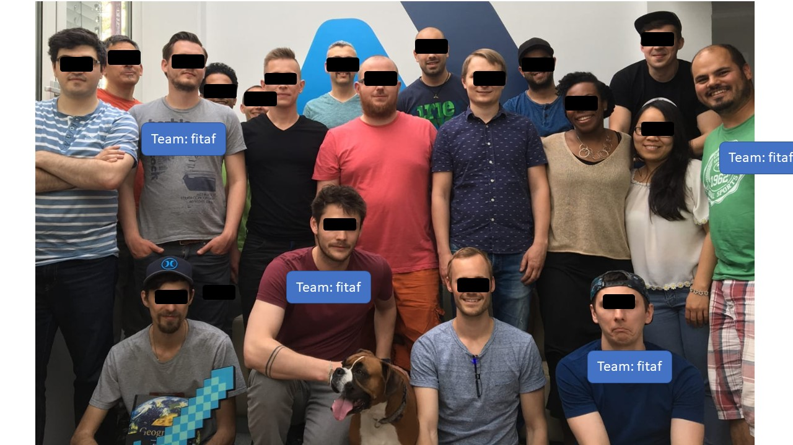

FITAF Team
-
jh - CEO
Before:
- > 8 years - CEO & CFO & CTO (now: founder & ahareholder)
- >> 3 years - Strategy Consultant for IT Managers
- >>> 5 years - Diploma Information Science (Wirtschaftsinformatik) at Uni Münster
- ad - IT
- fm - IT
- aa - Sales Germany - Arabs
- ql - Sales France & Product Management

FITAF Prospects in WhatsApp Update Group
name - how i know them - what they are doing now - what I want them to do for me
- bm - ex-colleague - creation & rollout of digitalized customer processes - sales Germany
- ar - ex-colleague - controlling - large potential customer
- bp - ex-colleague - some mgmt position in IT - dont know :-) need good people :-)
- cn - contact via ts - marketing free-lancer - sales usa - might go to Silicon Valley
- dh - brother - engineer - sales germany: automotive and sports clubs
- dd - former project manager - software sales director - sales arabs
- ds - cousin - flying/flight instructor - sales malysia & singapore
- et - former employee - country manager GER for an international travel company - sales europe and/or travel
- hf - study colleague - working in uni & doctrate in IT CONTROLLING - product management
- jg - ex developer (external) - ruby development - sales poland
- jt - school friend - project member at DAX coorperation - sales germany engineering
- jn - former study colleague who spend time abroad with me in australia - dont know :-) maybe "Sales germany Consultancies & IT"
- jp - awesomely looking girl ( :-D ) i get to meet in January - teacher - sales germany schools-west - might go to singapore
- jb - old school friends - teacher - sales germany schools north
- lz - ex-football co-player :-) - consultant/ ux conceptualization- product management
- mk - school friend - working at large german cooperation (DAX) - sales germany (or new zealand :-))
- mb - study colleague - managing director logistics company - product or IT
- mp - my auntie - gardener - sales malaysia & singapore - might go to singapore
- na - friend of my cousins cousin :-) - strategic projects & sales "debt prodUcts" - sales greece
- ra - ex employee - hr - hr
- sd - school friend - marketing lead - head of marketing
- ss - friend of a cousin - "8 to 5 corporate slavery" :-) - sales malysia & singapore
- ts - ex employee - project manager - sales israel
- wr - ex-girlfriend - cruise ship director - sales music schools germany & artists/musicians